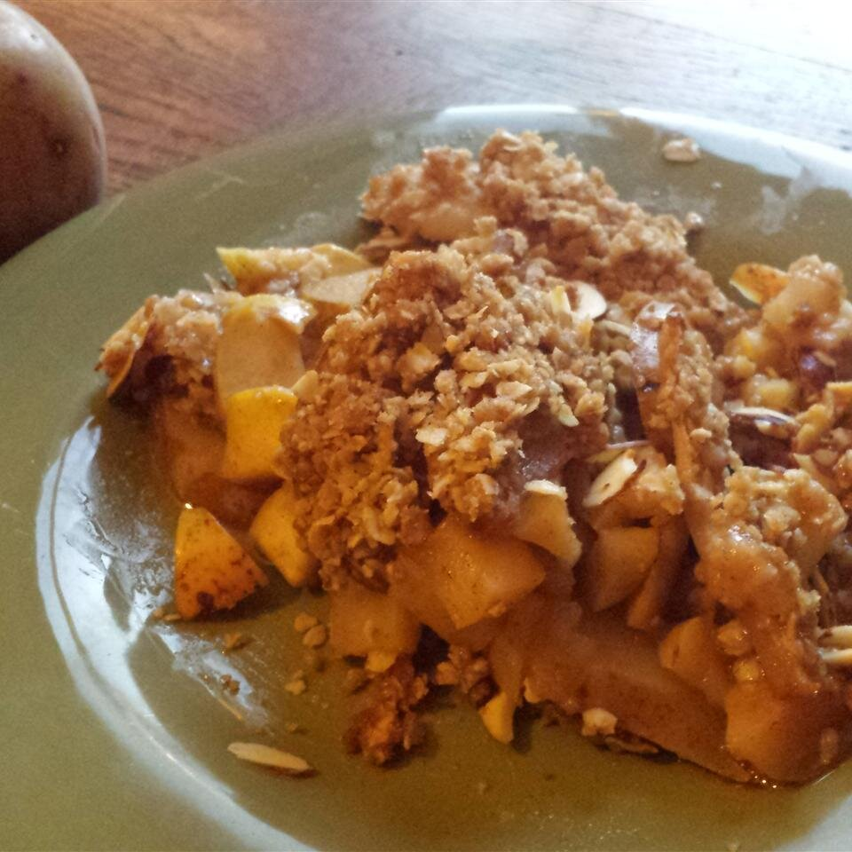

Apple Cobbler

Description
10 mins
Cook:
30 mins
Total:
40 mins
Servings:
12
Yield:
1 9x13-inch cobbler
ingredients
- 6 large Granny Smith apples - peeled, cored and sliced
- 3 tablespoons white sugar
- 1 teaspoon ground cinnamon
- 1 large egg
Steps
- Preheat the oven to 350 degrees F (175 degrees C). Combine 3 tablespoons sugar and cinnamon in a bowl.
- Layer apples in an ungreased 9x13-inch baking pan, sprinkling each layer with cinnamon-sugar.
- Combine flour, 1 cup sugar, egg, and baking powder with a fork. Sprinkle over apples. Lightly sprinkle water over top.
- Bake in the preheated oven until topping is golden brown, about 30 minutes.